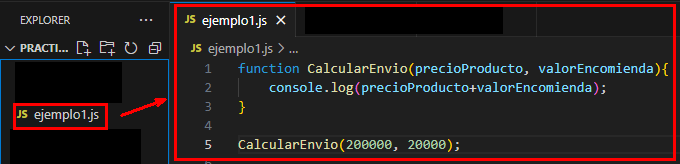
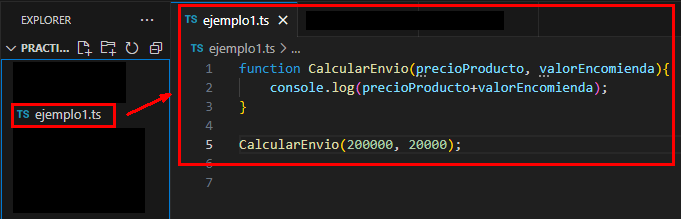
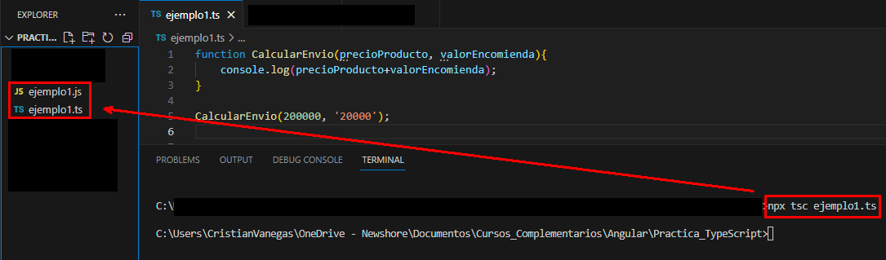
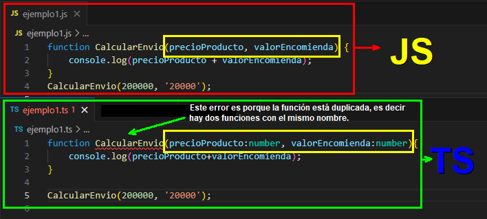
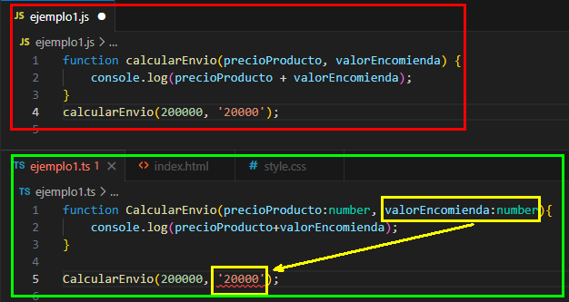
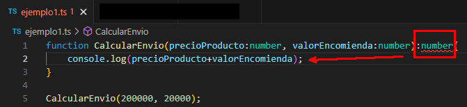
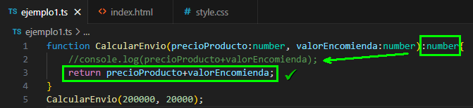

Tenemos el siguiente archivo en VSC. Observemos que no hay archivo html, por lo tanto no podemos ejecutar esta función en el navegador.

1 - Tener instalado node.js. Puedes ir a la página de descarga aquí
2 - Abrimos una Terminal dentro de VSC. En la barra de herramientas, en la parte superior, vamos a Terminal/New Terminal. Se nos abre en la parte de abajo del VSC la terminal.
3 - Usamos el comando node (espacio)nombreDelArchivo, en este caso ejemplo1.js y damos enter. Mostrará el resultado de la funcion creada, en este caso la funcion CalcularEnvio(), suma los parametros precioProducto mas valorEncomienda.
Nota
En el ejemplo las variables las incluimos directamente en la funcion sin declararlas, por lo tanto el programa no detecta que tipo de datos debe recibir. Esto no está bien, ya que necesitamos que el cálculo se haga sobre valores numéricos; si cambiamos uno de los parametros por texto, el programa concatenará, ya que obviamente no se puede hacer una operacion matemática con un valor numérico y otro de texto y JavaScript esta programado para funcionar de esta manera.
Observemos en la imagen anterior, que si cambiamos un parámetro a texto, no nos da errores de sintaxis, puesto que no se han declarado los tipos de datos que recibiran los parámetros, por lo tanto, JS hace una concatenación, como se había menciando anteriormente.
Aqui es donde entra TypeScript, para ayudar a los desarrolladores a solucionar este tipo de problemas, en realidad es un lenguaje creado con este fin, "ayudar a los programadores".
Pasos
1 - Vamos a la página oficial de TypeScript. Aquí un enlace directo.
2 - En la pestaña Download, seccion via npm, copiamos el comando "npm install typescript --save-dev".
3 - Ejecutamos el comando "npm install typescript --save-dev" en la terminal de VSC.
Como ya tenemos instalado TypeScript, podemos cambiar la extensión del archivo con el que estamos trabajando, es decir, .js a .ts. No abrá ningún cambio sustancial, pero veremos más adelante las ventajas de este lenguaje.

Observemos que no errores de sintaxis y que el archivo sigue siendo el mismo.
Importante: El código de TypeScript no lo podemos ejecutar de la mismo comando de Node que con JavaScript.
Para ejecutar un archivo TS debemos primero convertirlo a JS, esto se logra con el comando de Node "npx tsc nombreArchivo" en este caso sería npx tsc ejemplo1.ts. Esto genera otro archivo con el mismo nombre, pero con la extensión js, como se muestra en la imagen siguiente:

Nota: Si se ralizan cambio en el archivo .ts, debemos ejecutar nuevamente el comando para generar el archivo .js.
Una vez hecho el cambio del archivo a JS, podemos ejecutarlo con el comando de node que mensionamos más arriba.
Para el tipado en TS simplemente agregamos dos puntos (:) al final de la variable o parámetro y le asignamos el tipo de dato. Para números solo existe un tipo de dato que es número. Para el ejemplo que estamos trabajando quedaría como se muestra en la imagen siguiente:

En la imagen anterior, el código que está resaltado con el recuadro de color amarillo, muestra los cambios que se hicieron en el archivo .ts, el cual anteriormente era el mismo que el .js.
Lo que hicimos fue darle tipado a los parámetros, es decir, especificarle a la función que estos parámetros van a ser de tipo número. Por ahora solo muestra un error y es por lo que se comenta en a imagen, pero una vez se solucione ese error, mostrará el siguinete. Este lenguaje no muestra todos los errores al tiempo.
En la próxima imágen se solucionará este primer error,pero aparecerá el siguiente, el cual es evidente el por qué.
Importante:Recordemos que si se realizan cambios en el archivo .ts, debemos ejecutar el comando para conversión de archivo .ts a archivo .js.

El error que se muestra despues de haber hecho la primera corrección y ejecutado el comando de converisón, es porque no se especifico que el segundo parámtro de la función iba a recibir un dato tipo numérico, pero le estamos enviando un dato tipo texto.
Para solucionarlo, simplemente cambiamos el valor del parámetro a tipo número, simplemente quitandole las comillas simples.
Nota: Observemos que el archivo .js, al ejecutar el comando de cambio de extensión, no cambió a pesar que al archivo .ts le añadimos el tipo de dato a los parámtetros.
Tambien podemos tipar la función para que retorne el tipo de dato que nosotros necesitamos, esto lo logramos de la misma manera como tipamos los parámetros, pero al final del cierre de los paréntesis de la función y antes de la llave de apertura. Al configurar la función de esta manera, nos va a presentar un error tal como está, ya que no le estamos pidiendo que retorne, sino que muestre en consola, con la función console.log(). Si vamos a tipar la función, debemos agregar un return y eliminar o comentar, en esta caso la linea console.lo(...).
 